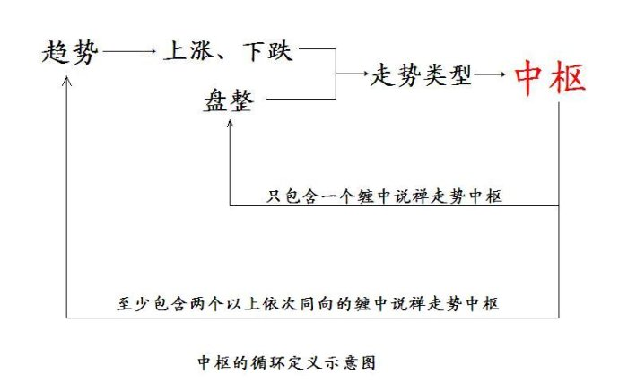
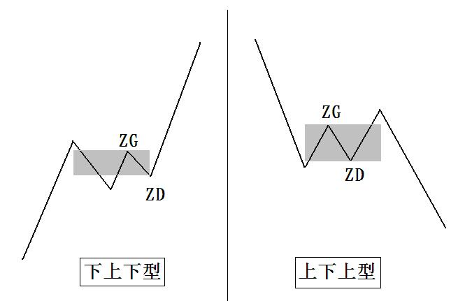
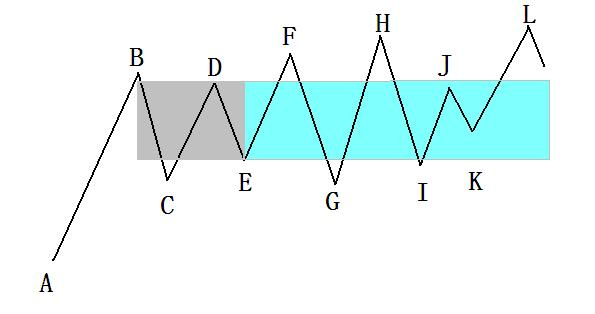
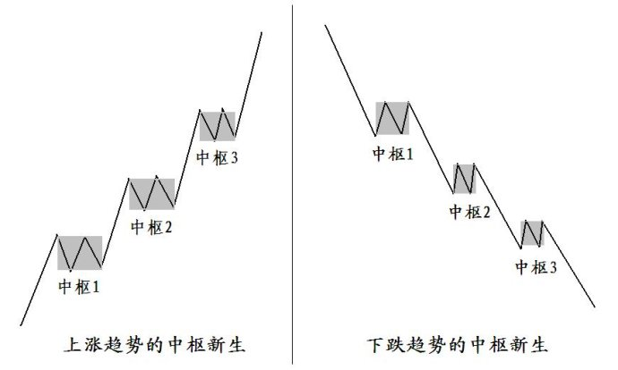
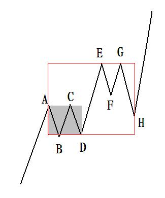

第289篇•《缠论》的分析（6）
谷为陵
《缠论》里最复杂的部分就是走势中枢了，走势中枢是什么？《缠论》曰：“缠中说禅走势中枢的概念：某级别走势类型中，被至少三个连续次级别走势类型所重叠的部分，称为缠中说禅走势中枢。换言之，缠中说禅走势中枢就是至少三个连续次级别走势类型重叠部分所构成。”（教你炒股票17，下同）。
但这个定义还是让人费解，因为要搞清楚这个定义，先要明白什么是走势类型。根据“缠中说禅走势分解定理一：任何级别的任何走势，都可以分解成同级别“盘整”、“下跌”与“上涨”三种走势类型的连接。”原来，走势类型是指盘整、下跌与上涨这三种走势。但事情还没完，什么是盘整、下跌与上涨呢？问题就开始多起来了，让我们仔细看看。
关于盘整,《缠论》认为，“缠中说禅盘整：在任何级别的任何走势中，某完成的走势类型只包含一个缠中说禅走势中枢，就称为该级别的缠中说禅盘整。”我们本来是要用盘整去定义中枢的，但现在倒过来用中枢定义盘整了，这就出现了循环定义的矛盾。
关于上涨与下跌，《缠论》认为，“任何级别的所有走势，都能分解成趋势与盘整两类，而趋势又分为上涨与下跌两类。以上结论，不是从天而降的，而是从无数图形的分析实践中总结出来的。”哦，上涨与下跌是指趋势，那么，趋势又是什么呢？《缠论》又说：“缠中说禅趋势：在任何级别的任何走势中，某完成的走势类型至少包含两个以上依次同向的缠中说禅走势中枢，就称为该级别的缠中说禅趋势。该方向向上就称为上涨，向下就称为下跌”。这又出现了上面的循环定义的矛盾，我们本来是要用趋势去定义中枢的，但现在反过来用中枢定义趋势了。
通过以上的概念的推导过程，我们看到了这样的一个循环定义链条：

大家应该看明白了吧，《缠论》的走势中枢定义实际上是一个循环定义。《缠论》最终也发现了这一点，于是提出这样的解决方案：“前面课程，最基础的无非两方面，一、中枢；二、走势类型及其连接。这两方面相互依存，如果没有走势类型，中枢也无法定义；而没有中枢，走势也无法分出类型。如果理论就此打住，那么一个循环定义就不可避免。要解决该循环，级别的概念是不可缺少的。有了级别，一个严格的递归式定义才可以展开。”（教你炒股票35）。用级别的递归式定义能够解决这个问题吗？我的回答是不能。
当然，我们没有必要对于走势中枢的定义这么死抠，其实，根据《缠论》的体系，对于走势中枢下一个精确定义并不难，由于笔和线段都是已知元素，用它们去定义中枢就不会出现循环定义的问题。这里面的细节问题很多，暂不赘述。
《缠论》认为，走势中枢有两种形成方式：一是上涨形成的，为“下—上—下型”；二是下跌形成的，为“上—下—上型”。两者如下图所示：

上图中的阴影部分，就是走势中枢，其中的ZG、ZD分别为区间的高点和低点。有了走势中枢的定义，就可以顺势推导出盘整和趋势的精确定义，关于这两个定义，我在上面已经给出了。
再简单说一下走势中枢的变化问题。走势中枢有延伸、新生与扩展三种变化情况。
走势中枢延伸，也称为走势中枢振荡。是指一个走势中枢形成后，一个次级别的走势（如，线段）离开中枢，形成突破，但这个突破是个假突破，走势随即又返回中枢，这个过程就是走势中枢延伸，它实际上就是盘整。如下图所示：

上图中的灰色部分是第一个走势中枢，其后，F、G、H、I、J、K、L点都是走势中枢的延伸，并将走势中枢延伸至浅蓝色区域，从B点到L点，最终表现为价格的盘整。
走势中枢的新生，是指一个走势中枢形成后，一个次级别的走势（如，线段）离开中枢，形成突破，但这个突破是个真突破，跟着的一个次级别的走势若不返回到中枢区间，就形成了走势中枢的新生，它表现为趋势。所以，走势中枢的新生，就是在前一个中枢的同方向上，又产生一个新的中枢，这两个中枢的价格不产生重叠，即，若以向上的趋势为例，则是第二个中枢的低点绝对高于第一个中枢的高点，表现为中枢的绝对上移，这就形成了向上趋势。按照趋势的定义，趋势至少包含两个同向的中枢，多者不限，如下图所示：

《缠论》认为，任何上涨或者下跌，都是走势中枢的新生导致的，没有走势中枢的新生，就没有上涨或者下跌。这是对于趋势的最独特的定义，与其它投资理论对于趋势的定义有很大的不同，但《缠论》这个趋势定义是否正确，我们还是要进行实证分析。
在走势中枢的新生里，同级别的两个相邻的中枢的区间是不能有任何重叠的，这包括在中枢的新生过程中，价格不可在瞬间回到前一个中枢的区间内，假若出现这样的情况，那么，就不认为中枢的新生是成立的，只可将此看成是走势中枢的扩展。所以，走势中枢的扩展，实际上就是第二个中枢没有真正形成，而与第一个中枢共同组成了一个范围更大的新中枢，表现为股价在更大的范围内的盘整。如下图所示：

上图的灰色部分是第一个中枢，由线段AB、BC、CD组成。线段DE形成了对于中枢的突破，且线段EF没有回到中枢之内，眼看着线段EF、FG、GH这三条线段即将形成另一个中枢，导致中枢的新生，但线段GH却深入到了前一个中枢之内，形成了重叠，这就违反了中枢新生的原则。于是，就不能认为EF、FG、GH这三条线段形成了新的中枢，而只能认为从A点到H点是形成了一个更大的中枢，如红线所框住的部分。
若总结起来，中枢的运动有两种基本方式：一是盘整运动，包括中枢延伸，这是横向运动；也包括中枢扩展，这是宽幅振荡，形成更大的中枢；二是趋势运动，特指中枢的新生，形成价格上涨或者下跌。
我认为，《缠论》对于中枢的描述，还是基于简化的原则。价格运动的基本方式，无非是盘整运动和趋势运动，中枢虽然复杂，但其基本的运动方式也是盘整运动和趋势运动，与价格运动的基本原理相同。这说明，《缠论》对于中枢的描述，就是要将中枢的运动合并在价格运动的大的框架之内，而不是要脱离价格运动的体系而另搞一套标准。这样做的好处是什么呢？就是直观。这与将价格走势简化为笔、线段的模式是相同的。
现在还有一个更重要的问题，中枢的意义是什么呢？《缠论》为什么要化这么多笔墨去论述中枢呢？
根据我的研究，其它技术分析理论更加重视趋势的研究，对于价格盘整的研究都没有像《缠论》这样大的比重。我认为，从本质上看，《缠论》论述中枢的根本目的是为了寻找趋势的拐点，而这些拐点，又与《缠论》的三类买卖点密切相关。但这个工作，是一个更富挑战性的，也是具有开创性的工作。因为，绝大多数技术分析理论，对于拐点都是采取回避的态度，最典型的如亚当理论，而《缠论》却要迎难而上，非要找到趋势拐点，那我们就来看看《缠论》能否达到目的。还是那句话，我们要以实证分析来进行验证。
（未完待续）